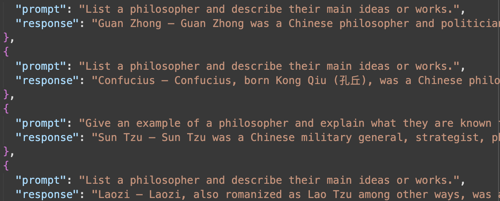

Teaching & Learning
Digital Humanities Workshops
-

Fine-tuning with Hugging Face Transformers - In Progress
An advanced Colab session demonstrating how to fine-tune a pretrained transformer using the Transformers library from Hugging Face. Students explore model configuration, tokenization, and evaluation.
Launch in Colab → View on GitHub
Humanities Courses
-
French 105: Intermediate French (Fall 2022) - Princeton University
A course designed around the close reading of a variety of authors, from philosophers (Frantz Fanon, Aimé Césaire) to poets (Natasha Kanapé Fontaine). Themes explored in the course include postcolonial thought in the Caribbean and decolonial activism in Quebec.
-
French 107: Intermediate/Advanced French (Fall 2021) - Princeton University
An advanced course for undergraduates with an emphasis on practicing complex linguistic structures, while examining works of literature by authors such as Dany Laferrière, Annie Ernaux and Charles Baudelaire, as well as a number of contemporary films.
-
Beginner's French (Fall 2021) - East Jersey State Prison
A course taught through Princeton's Prison Teaching Initiative (PTI) covering the essential groundwork of French, with exercises in prononciation and key grammatical structures, and culminating in students producing a short essay that synthesized knowledge gained in the course.
-
French 103: Intensive Intermediate French (Fall 2020) - Princeton University
An accelerated beginners course in French, teaching grammar structures in cultural context.
-
French 101: Beginners French (Fall 2019) - Princeton University
An introductory-level course in French for undergraduate students, focusing on competency in speaking, listening, reading and writing.
-
First-Year French to English Translation (Fall 2017, Spring 2018) - University Lyon III
A translation workshop for first-year undergraduate students, with each session focused on a particular grammatical theme. The course was structured around students' translations for an assigned text, which were discussed and workshopped as a group.
-
Second-Year French to English Translation (Fall 2017, Spring 2018) - University Lyon III
A translation workshop for second-year undergraduate students focusing on themes of culture and civilization in the Anglophone world.
-
English for History Students (Fall 2017) - University Lyon III
A course for history students on the theme of myth in Anglophone countries; topics covered included narratives of identity in 19th-century Ireland, mythologies in American western films, and counterfactual histories.